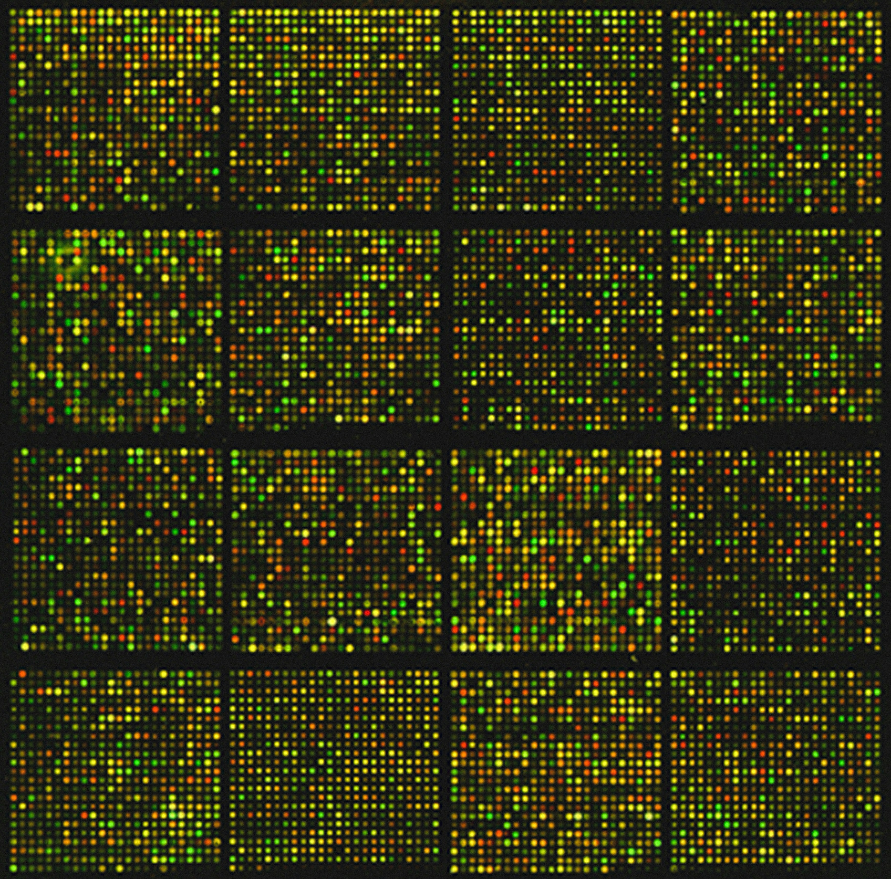
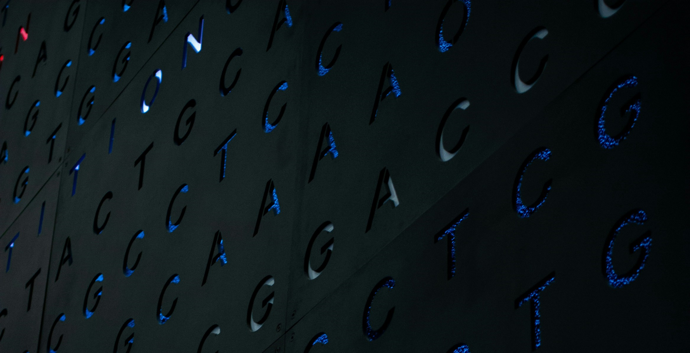
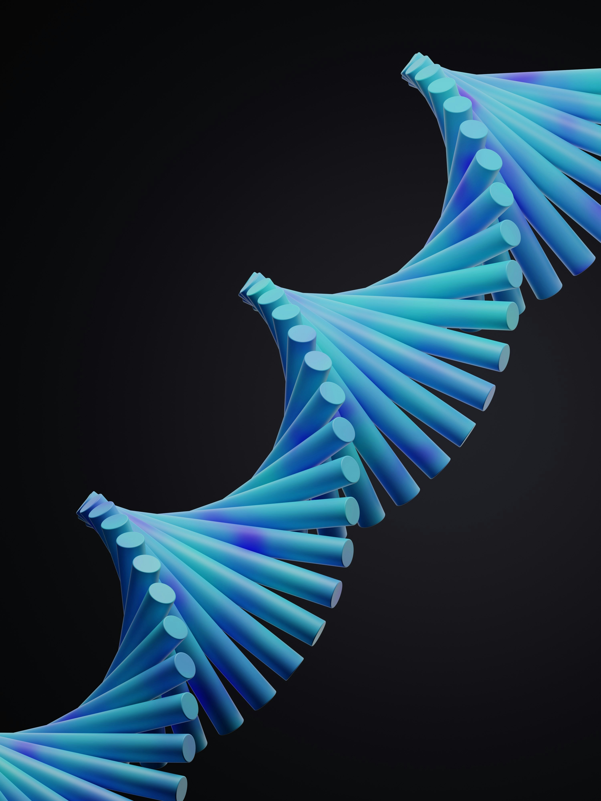

Biomarker discovery workflow
Machine Learning
Statistics
Whether you're working with genomics, transcriptomics, proteomics, if your project generates biological data, I can help you extract meaningful insights.


